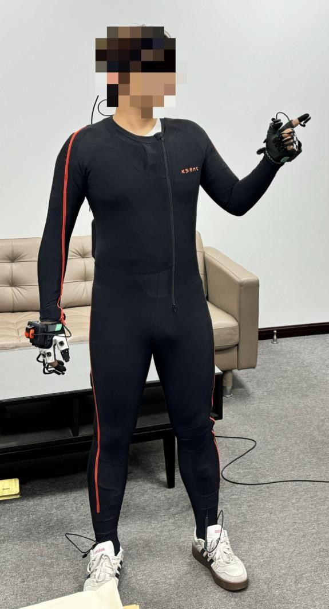
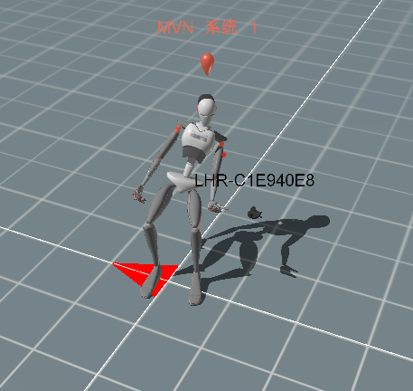
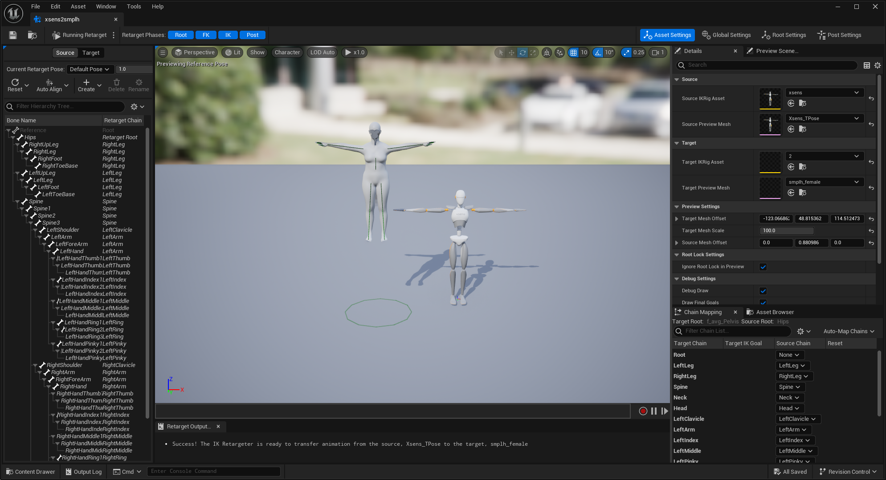
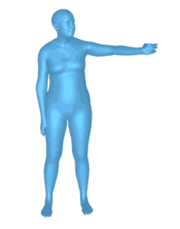
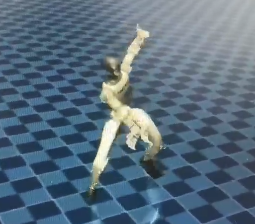
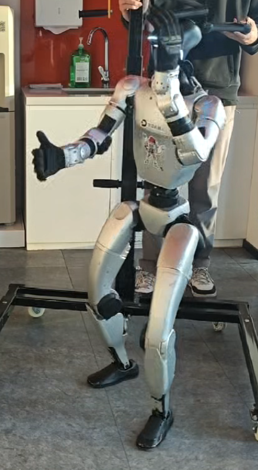

Data Foundation
Motion Capture、Xsens Data Check 与 UE5 Retarget 组成真实动作数据入口。
整体系统以统一动作表示为共享接口，但并非单一线性流程：Processing 后的数据可进入 生成模型，也可绕过生成与评价模块，直接进入机器人重定向与控制链路。
Motion Capture、Xsens Data Check 与 UE5 Retarget 组成真实动作数据入口。
统一 20 FPS / 135D 表示，同时服务 StableMoFusion 与 GMR 两条下游路线。
Evaluator 跟随 StableMoFusion，对推理结果的 Match 与 Smooth 质量进行评价。
GMR 可接收 Processing 数据或 StableMoFusion 结果，再进入仿真训练与 G1 部署。
Capture、Data Check、UE5 Retarget 与 Processing 形成共享数据基础。随后路线分叉： StableMoFusion 负责训练与推理，Evaluator 仅评价生成结果；GMR 则可接收标准数据或生成结果。
Xsens MVN Link
人体动作采集
回放、质量检查
数据管理
Xsens Skeleton
→ SMPL-H
FBX → PKL → NPY
20 FPS · [T,135]
训练与 Text-to-Motion
推理生成
仅评价生成结果
Match · Smooth
接收标准或生成动作
Retarget · PPO Tracking
Sim2Real
Real-world Execution
真实项目素材覆盖动作采集、骨骼重定向、标准化处理、动作生成、偏好评价与机器人部署。 卡片按工程模块陈列，不代表唯一执行顺序；Processing 与 StableMoFusion 均可为 GMR 提供 motion input。

围绕场景、角色与代表性行为开展任务驱动式采集，保留编号管理、重采与质量追踪信息。

在进入重定向前核验动作语义、连续性与整体质量，为批量处理提供稳定输入。

通过 Source / Target IK Rig、Chain Mapping 与 Retarget Pose，将 Xsens Skeleton 转换到 SMPL-H；完成检查后使用 Export 或 Bulk Export 输出 FBX。
PKL 作为可检查的中间表示；标准化 NPY 可分别进入 StableMoFusion 或直接进入 GMR。

以自然语言文本为输入，生成与 GT 共用统一接口的动作，可送往 Evaluator 或 GMR。
以 Match 与 Smooth 两个维度建模生成质量，增强自动评价与人工感知的一致性。

GMR 接收 Processing 标准动作或 StableMoFusion 生成结果，生成 G1 reference 后进入 HoloMotion / Isaac Lab。

将策略导出并接入 ROS2 / Unitree SDK，通过 PD Control 完成从仿真到真机的渐进式验证。